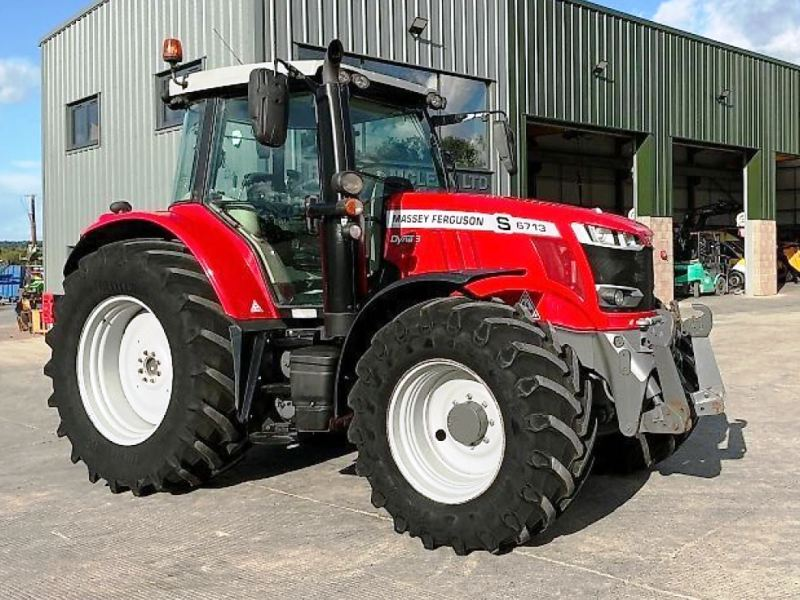

Massey Ferguson 6713

Massey Ferguson 6713 – це флагманська модель «Глобальної серії», яка поєднує в собі простоту конструкції та потужність середнього класу. Завдяки відсутності складної електроніки в паливній системі та великому крутному моменту, машина демонструє стабільну тягу на важких ґрунтах при низьких витратах пального.
Модель вирізняється посиленою трансмісією з механічним реверсом або системою Power Shuttle, яка дозволяє змінювати напрямок руху без натискання педалі зчеплення. Велика вантажопідйомність задньої навіски (5200 кг) та продуктивна гідросистема роблять його універсальним інструментом для оранки, роботи з важкими сівалками та транспортування вантажів. Простора кабіна з ергономікою преміум класу забезпечує оператору комфорт під час довгих змін, що робить MF 6713 популярним вибором як для тваринництва, так і для рослинництва.
| Параметр | Характеристика |
|---|---|
| Клас тяги | 2.0 |
| Тип ходової частини | колісний |
| Колісна формула | 4х4 (повний привід) |
| Тип рами | жорстка, зварна |
| Основне призначення | загальносільськогосподарські роботи: підготовка ґрунту, посів, догляд за посівами, транспортні роботи |
| Параметр | Значення |
|---|---|
| Модель | AGCO Power AP44 (Tier 3) |
| Тип двигуна | чотиритактний дизель з турбонаддувом та Intercooler |
| Спосіб охолодження | рідинне |
| Розташування циліндрів | рядне, вертикальне (4 циліндри) |
| Діаметр циліндра/хід поршня | 108 мм / 120 мм |
| Робочий об’єм | 4,4 л |
| Номінальна потужність | 98 кВт (132 к.с.) |
| Номінальні оберти | 2200 об/хв |
| Система пуску | електростартер |
| Питома витрата палива | ~205-215 г/кВт.год |
| Параметр | Значення |
|---|---|
| Муфта зчеплення | мокра багатодискова |
| Тип КПП | механічна, синхронізована (Synchromesh) |
| Кількість передач | 12 вперед / 12 назад |
| Кількість діапазонів | 2 |
| Реверс | механічний або гідравлічний Power Shuttle |
| Діапазон швидкостей (вперед) | 1,5 – 40,0 км/год |
| Вал відбору потужності | задній незалежний, 540 / 1000 об/хв |
| Номер діапазону | Номер передачі | Теоретична швидкість, км/год | Передаточне число трансмісії | Тягове зусилля, кН |
|---|---|---|---|---|
| I (Low) | 1 | 1,56 | 455,4 | 45,00 |
| 2 | 1,91 | 371,2 | 45,00 | |
| 3 | 2,42 | 292,8 | 45,00 | |
| 4 | 3,14 | 225,5 | 45,00 | |
| 5 | 4,05 | 174,8 | 44,50 | |
| 6 | 5,22 | 135,7 | 34,20 | |
| II (High) | 1 | 7,65 | 92,8 | 23,40 |
| 2 | 9,38 | 75,7 | 19,00 | |
| 3 | 11,88 | 59,7 | 15,10 | |
| 4 | 15,42 | 46,0 | 11,60 | |
| 5 | 19,89 | 35,7 | 9,10 | |
| 6 | 25,63 | 27,7 | 6,90 |
| Параметр | Характеристика |
|---|---|
| Тип коліс | пневматичні шини |
| Марка шин | передні: 380/85 R28; задні: 460/85 R38 |
| Радіус ведучого колеса | 0,76 м |
| Кількість коліс | 4 (однакові по осях) |
| Ведучі мости | обидва (передній міст підключається електрогідравлічно) |
| Параметр | Характеристика |
|---|---|
| Під час роботи з навантаженням | 10,5 – 14,5 кг/год |
| Під час холостих переїздів | 3,5 – 5,0 кг/год |
| Під час зупинок (холостий хід) | 1,2 – 1,8 кг/год |
| Параметр | Значення |
|---|---|
| Маса експлуатаційна (без баласту) | ~4230 кг |
| Максимальна допустима вага | 8500 кг |
| Довжина / Ширина / Висота | 4765 мм / 2225 мм / 2855 мм |
| Колія (мінімальна) | 1550 мм |
| Колісна база | 2500 мм |
| Дорожній просвіт | 460 мм |
| Тип навісного пристрою | задній гідравлічний, триточковий (Категорія 2) |
| Об’єм паливного баку | 170 л |
| Параметр | Значення |
|---|---|
| Особливості кабіни | панорамна, з кондиціонером, опаленням та рівною підлогою |
| Гідравлічна система | відкритого типу, продуктивність 57 л/хв (опційно до 98 л/хв) |
| Гальма | мокрі дискові гальма з гідравлічним приводом |
| Електрообладнання | напруга - 12 В, АКБ - 120-150 Аг |
| Вантажопідйомність навіски | 5200 кг (на кінцях тяг) |